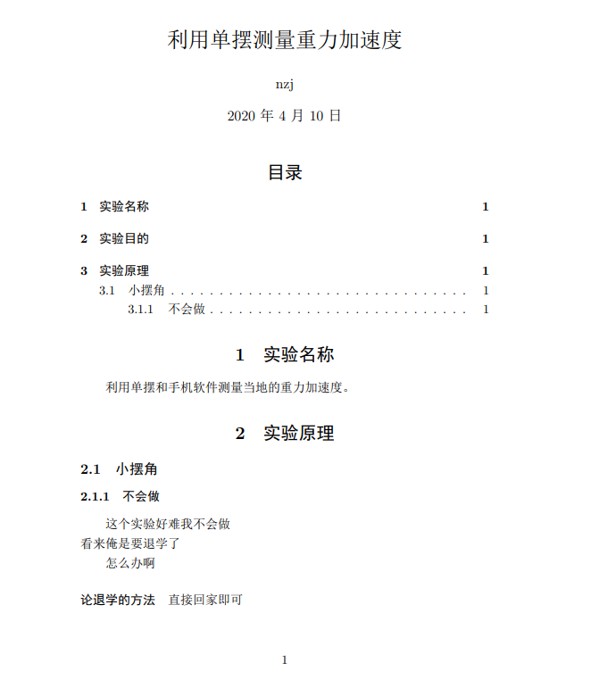
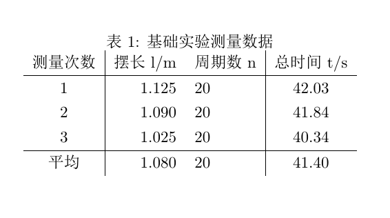
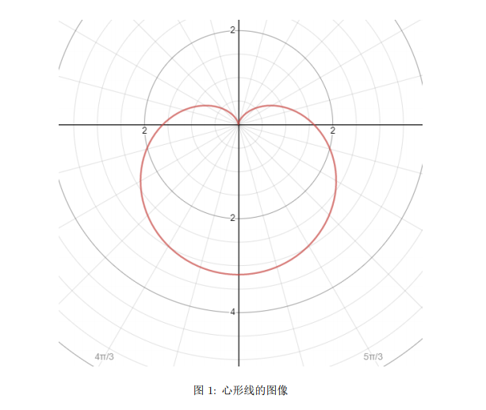
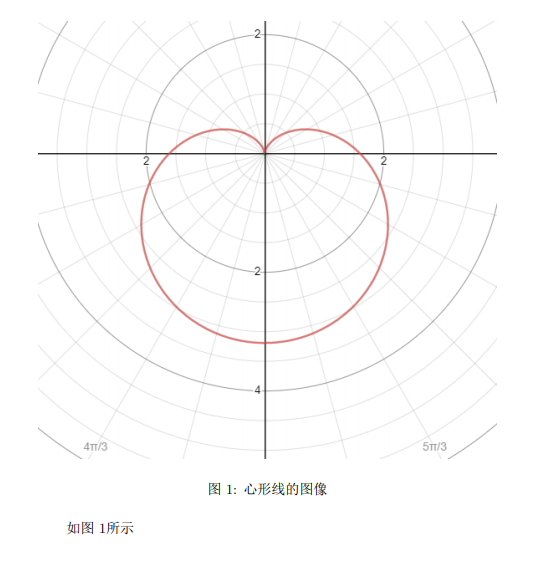
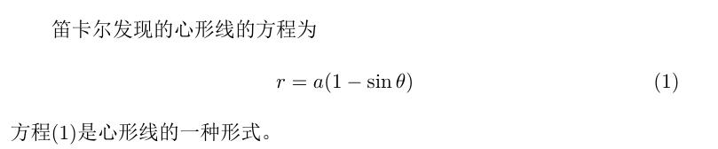
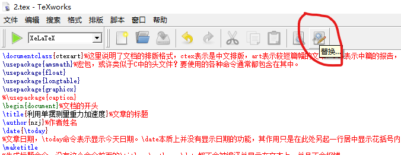

下载地址清华镜像和中国科大镜像（下载texliveYYYY.iso或者texlive.iso均可）
废话不多说（要不是字丑我何必去学这玩意。。。），先看LaTex文档的基本结构吧：
\documentclass{ctexart}%这里说明了文档的排版格式，ctex表示是中文排版，art表示较短篇幅的文章，rep表示中篇的报告，book表示长篇的著作，俺写实验报告用个art或者rep就行了。
\usepackage{amsmath}%宏包，要使用的各种命令通常都包含在其中。
\begin{document}%文档的开头
\title{利用单摆测量重力加速度}%文章的标题
\author{nzj}%作者姓名
\date{\today}
%文章日期，\today命令表示显示今天日期。\date本质上并没有显示日期的功能，其作用只是在此处另起一行居中显示花括号内的文字（不信你在花括号里面随便写点什么，都可以编译通过）。中文环境下默认格式为“2020年3月1日”。
\maketitle
%生成标题命令。没有这个命令前面的\title、\author、\date都不会被编译并显示在文本上，并且不会报错。
\tableofcontents %生成目录
\section{实验名称}%section表示小节。
利用单摆和手机软件测量当地的重力加速度。%正文内容。
\section{实验原理}
\subsection{小摆角} %在section下面的“小小节”可以用\subsection和\subsubsection，二者均会显示在目录中。
\subsubsection{不会做}
这个实验好难 %直接回车没有任何效果。
我不会做 \\ %用两个双斜杠“\\”来直接换行。
看来俺是要退学了
怎么办啊%空一行可以另起一段（与双斜杠的区别在于会按中文排版规范空两格并于前一段之间间隔一个空行
\paragraph{论退学的方法}直接回家即可 %\paragraph{}命令也可以另起一段，并且花括号中的内容会粗体显示，但不会显示在目录里面。
\end{document}%文档的结束
注意，在使用TeX软件时，建立的.tex文件及目录最好不要包含中文字符，否则很可能会报错。
上面的代码编译之后的效果如下图所示：

科技论文中常常会有许多公式，LaTeX正是为此而生的。
需要注意的是，LaTeX中使用公式时需要使用\usepackage{amsmath}宏包，否则可能无法编译一些数学符号，记得将其添加在代码前面哦~
在LaTeX中，公式有以下三种表达方法：
行内公式的意思是不会换行，跟前后的文字一样显示。使用方法是用一对“$”将要显示的公式内容包住，如下所示：
笛卡尔发现的心形线的方程为$ r = a (1 + \sin \theta ) $ //在数学公式中，运算符号均应使用正体，故不能直接输入"sin"而应输入"\sin"。
其显示效果为
行间公式的意思是会另起一行，并居中书写公式，无论在代码中位置如何，公式均会单独占一行。使用方法是用一对”$$”将要显示的公式内容包住，如下所示：
笛卡尔发现的心形线的方程为$$r = a ( 1 - \sin \theta ) $$心形线的正式名称是在17世纪时发表的.
显示效果为：
注意：行间公式虽然会导致文本换行，但是后面的文本并不是另起一段，从上图中文本的缩进也可以看出来这一点。LaTeX中最常用的还是使用公式环境，利用标签”\begin {equation}”和”\end {equation}”，在公式环境中，可以方便地设置引用标签便于后续引用。其显示效果与行间公式相同。使用的具体形式如下：
笛卡尔发现的心形线的方程为
\begin{equation}\label{eq1}
%\label命令就是引用标签，其具体使用方式会在后面提到。
r = a ( 1 - \sin \theta )
\end{equation}
心形线的正式名称是在17世纪时发表的.
显示效果如下：
注意到没有？公式后面已经有了编号(1)！
当然，这个编号与你前面在\label命令里面写的内容没有任何关系，程序会自动帮你编号，而\label里面写的内容只是用来引用的名称。具体的内容参见“引用”
在写公式的时候，会有许多符号的代码需要记忆，这里给出几个页面以供查阅：
Markdown/Latex代码速查(Markdown与LaTeX的符号代码通用，这些符号同时还被Html兼容，所以学Html的时候这些也可以用上。这个网站经常会打不开，后面会附上PDF的链接)
普通表格的一般代码如下：
\begin{table}[h]%表格环境开始
%『h』当前位置。将图形放置在正文文本中给出该图形环境的地方。如果本页所剩的页面不够，这一参数将不起作用。『t』顶部。将图形放置在页面的顶部。『b』底部。将图形放置在页面的底部。
\centering %表格居中
\caption{基础实验测量数据} %表格标题，使用\caption命令时程序同样会为表格自动编号
\begin{tabular}{c|r l|c} %开始绘制表。c表示该列元素居中，l表示居左，r表示居右，中间的竖线|表示此处有竖直边框。
测量次数 & 摆长l/m & 周期数n & 总时间t/s \\ \hline%单元格之间以&分开，\hline 表示此行下面有水平边框。
1 & 1.125 & 20 & 42.03 \\ %双斜杠换行
2 & 1.090 & 20 & 41.84 \\
3 & 1.025 & 20 & 40.34 \\ \hline
平均 & 1.080 & 20 & 41.40 \\
\end{tabular}%表格绘制完毕
\end{table}%表格环境结束
上面表格的显示效果如下：

注：有时表格较长，会超出该页面，此时h命令失效，会导致表格的位置移动。此时若要强制要求表格乖乖呆在原来的地方，则需要使用\usepackage{float}宏包并在表格位置参数中使用大写H参数，即
\begin{table}[H]
当需要的表格非常长（超出了一页）时，此时如果仍然使用普通表格代码时就会出现问题（不会报错），如下图所示：
下方表格没有显示完整
\begin{center}%居中环境
\begin{longtable}{cc|cc|cc}%长表格开始
\caption{高阶实验Tracker导出数据}
t/s & x/m & t/s & x/m & t/s & x/m \\ \hline
1.5 & 0.200747 & 3.944444 & 0.135919 & 6.388889 & -0.16002 \\ \hline
1.555556 & 0.214805 & 4 & 0.097978 & 6.444444 & -0.23503 \\ \hline
1.611111 & 0.221288 & 4.055556 & 0.056287 & 6.5 & -0.2905 \\ \hline
1.666667 & 0.21598 & 4.111111 & -0.00922 & 6.555556 & -0.34398 \\ \hline
1.722222 & 0.201832 & 4.166667 & -0.06365 & 6.611111 & -0.40928 \\ \hline
%后面还有许多，此处略去。
\end{longtable}
\end{center}
效果如下：
此时表格已经自动分为两页
估计你看到这个长表格的时候会有这种想法：这么长一个表格一个个字手打怕不是要打到明年去？
这里就介绍一个表格必杀技网站：
https://www.tablesgenerator.com/
在Excel中把表格拟好，就可以直接复制进这个网页，具体的操作方法参见这个视频
插入图片需要使用\usepackage{graphicx}宏包。
图片的插入代码如下：
\begin{figure}[H]%这个H与表格中的含义一样，表格中的代码也可以用在此处
\centering
\includegraphics[width=1\textwidth]{图片.png}%数字代表占页面大小的比值，1代表充满页面，也可以自行调整数字来调整图片大小。
%只有当图片文件与文档.tex文件处在同一目录下时才能如此直接插入图片。
\caption{心形线的图像} %标题，同样会自动编号。
\end{figure}
效果如下：

在写作时，常常会遇到引用的问题，比如“由式(1)可知”、“在图(3)中可以看出”······
通过\label 标签即可进行这样的引用，\label标签适用于图片、表格、公式等，具体使用方法如下：
\begin{figure}[H]
\centering
\includegraphics[width=1\textwidth]{1.png}
\caption{心形线的图像}
\label{p1} %\label后面的花括号内写上你的记号
\end{figure}
如图\ref{p1}所示 %\ref后面的花括号中写上要引用的对象的记号。
效果如下：

表格引用的方法类似，代码如下，具体效果就略去不表了（懒
\begin{table}[h]
\centering
\caption{基础实验测量数据}
\begin{tabular}{c|c|c|c}
\label{t2} %与图片引用基本相同
%表格具体内容略去
\end{tabular}
\end{table}
注意：长表格在添加引用标签时，要在表格具体内容的前一行的末尾加上一个双斜杠，否则会报错，具体原因尚不明确。如下所示：
\begin{longtable}{cc|cc|cc}
\caption{高阶实验Tracker导出数据}
\label{t-2} \\ %添加双斜杠
t/s & x/m & t/s & x/m & t/s & x/m \\ \hline
1.5 & 0.200747 & 3.944444 & 0.135919 & 6.388889 & -0.16002 \\
%后略
方程的引用其实也与图表的引用方法类似，如下所示：
\begin{equation}
\label{eq1}%引用标签
r = a ( 1 - \sin \theta )
\end{equation}
但是，方程的引用通常是带括号的，这时就要用上\eqref命令，如下所示：
\begin{equation}\label{eq1}
%\label命令就是引用标签，其具体使用方式会在后面提到。
r = a ( 1 - \sin \theta )
\end{equation}
方程\eqref{eq1}是心形线的一种形式。
效果如下：

由于在科技文献中常常要求使用半角的标点，而平常输入汉字时通常使用的都是全角标点，来回切换非常麻烦。此时可以利用TeX Work软件（VS Code 同理）自带的替换功能，将全角标点替换为半角标点。

此处列举几个目前俺见到的几种错误：
图中的“l.4”是指语句的编号，4代表第四行（包括注释行）
当出现\documentclass语句时，通常是排版方式不对，建议检查排版方式是否正确，通常中文排版应当采用XeLaTeX排版（在“编辑-首选项-排版”中可以更改默认排版方式）；
当出现其他语句时，通常的原因有两种，一是语句的单词拼错了；二是语句对应的宏包忘记加载了。检查一下即可。
出现这种错误可能是有对应标签缺失，比如少了一个\end{table}等等，并且这种报错时提示的语句通常不是缺失的那一句，故此时要在提示的语句附近寻找（一般在上面）
在“编辑-首选项”中可以进行许多设置，比如在“编辑器”中就可以设置显示行号方便查找错误等等；
在“格式-字体”还可以调整界面的默认字体和字号（注意不是排版的文档的字体和字号）。默认的字体很小还很丑，不妨更换一个自己更喜欢的字体。